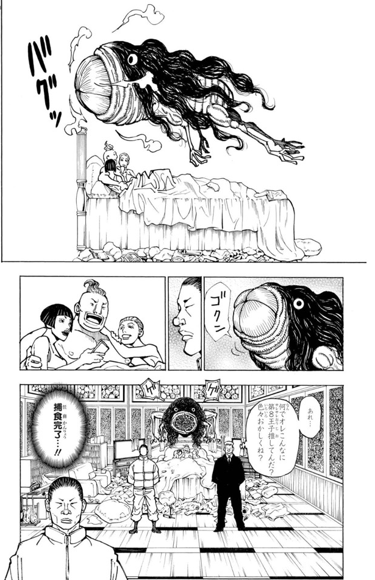

リハン
- 登録名
- リハン
- 分類
- 兵士
- 初期配置（現在地ではありません）
- 第1層 1008号室
初期配置は台帳の当初の担当先です。後任の人物や復元枠も含み、全員の出航時の在室を示すものではありません。後の展開は下の折りたたみにまとめています。
人物詳細（後の展開を含む）
- 状態
- 存命
- 所属
- ベンジャミン陣営
- 役割
- 元サレサレ監視担当のベンジャミン私設兵。第381話で1011号室への移動を無線で指示され、第386・388話では第5王子ツベッパの監視についているとされる
- 最後の登録任務先
- ツベッパ陣営（第5王子の監視。第386・388話）
- 最後の所在
第1層 1008号室（第372話時点・場所は画像で確認）
ほかの関係記録（本人の在室は未確認）
- 念使用の確認
- 念使用：確認済み
- 念系統
- 未確認
- 念能力
- 異邦人（プレデター）：リハンがターゲットを定めると、リハンの中でプレデターが育ち始める。対象の能力を自ら観察・推理して情報を集めるほど強いプレデターとなる。サレサレの守護霊獣の分身を捕食した際に発動し、使用後48時間は念能力が使用不可になった

編集状況
- 人物ID：P01-P13
- 状態の確認話数：未登録／根拠の出来事：未照合
- 公開データの登録情報から生成したページです。個人メモ・編集内容・調査記録は含めません。
- 一覧の詳細でメモ・編集
情報源：公開人物台帳・公開出来事台帳。